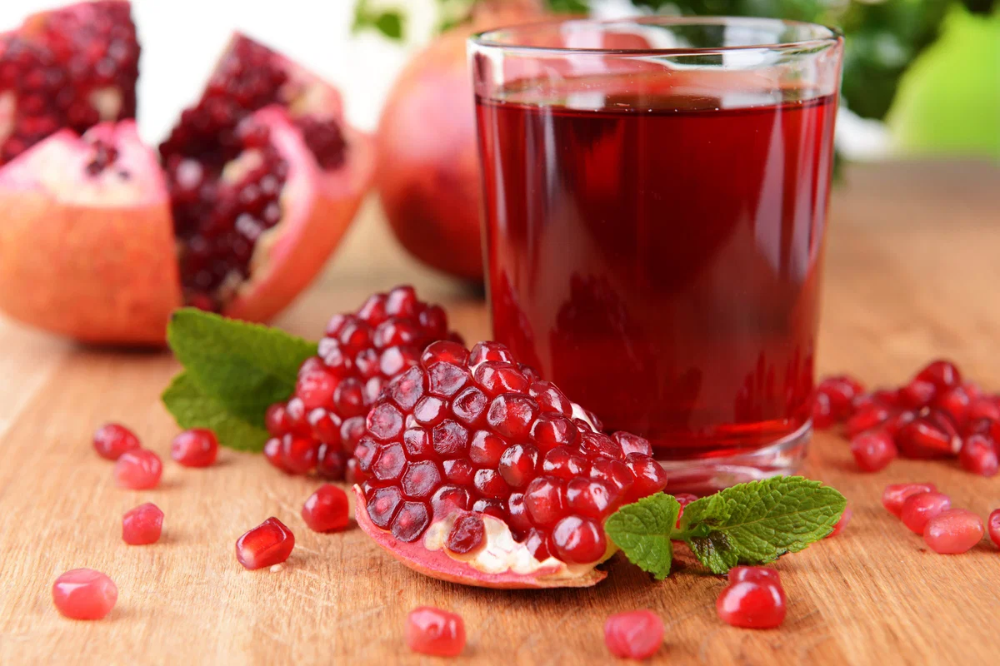
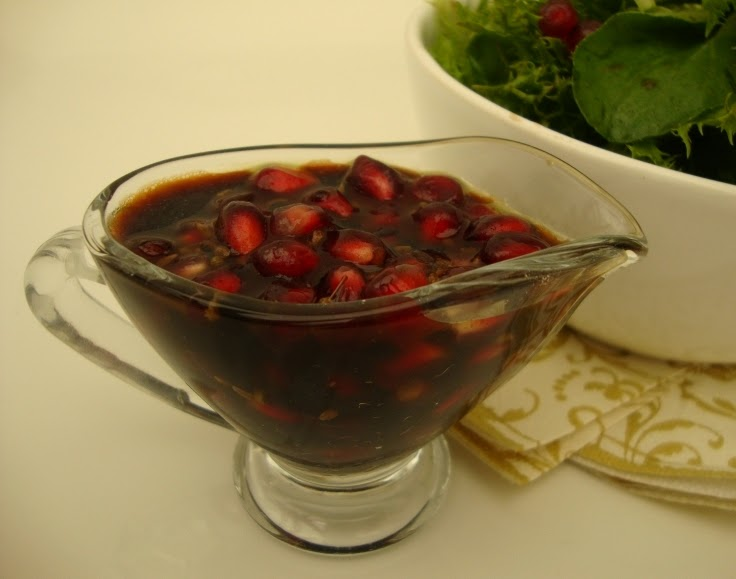

A romã, cientificamente denominada Punica granatum, possui uma linhagem que se confunde com a própria história da civilização humana. Sua origem geográfica está enraizada nas terras férteis do Irã e do Afeganistão, estendendo-se pelas montanhas do Cáucaso e pelo Himalaia setentrional. Considerada uma das primeiras árvores frutíferas a serem domesticadas pela humanidade, ao lado do figo e da uva, a romãzeira já era cultivada há muito mais de 3 mil anos, servindo como uma fonte vital de nutrição e medicina para os povos da Mesopotâmia e do Egito Antigo. A expansão da fruta pelo mundo foi impulsionada pelas grandes rotas comerciais da Antiguidade. Os fenícios foram os principais responsáveis por levá-la através do Mar Mediterrâneo, estabelecendo plantações em Cartago — no atual território da Tunísia —, o que levou os romanos a apelidarem o fruto de "maçã púnica". Ao longo dos séculos, a planta demonstrou uma versatilidade biológica impressionante, adaptando-se com facilidade a solos pobres e a regimes de pouca água. Embora tenha uma preferência natural por climas tropicais e subtropicais, onde o calor intenso do verão permite que os arilos desenvolvam sua doçura e cor vibrante, a romãzeira também suporta invernos moderados, o que permitiu sua disseminação por todos os continentes.
O plantio da romãzeira deve ser feito em locais com bastante incidência de luz solar. O solo deve ser bem drenado e fértil. A melhor época para o plantio é durante a primavera, quando as condições climáticas favorecem o crescimento da planta.
Originária do Oriente Médio e da Ásia Central, a romãzeira (*Punica granatum*) é uma das árvores frutíferas mais antigas cultivadas pela humanidade, com registros que superam os 3 mil anos e carregam forte simbolismo de fertilidade em diversas culturas. A planta demonstra uma notável resiliência ao se adaptar a solos áridos e climas variados, embora floresça com maior vigor em regiões tropicais e subtropicais. Seu ciclo reprodutivo ocorre entre a primavera e o verão, marcado pelo surgimento de flores de um vermelho intenso que, após a polinização realizada principalmente por insetos, dão origem a frutos repletos de arilos suculentos e nutritivos, mantendo na extremidade a icônica coroa formada pelo antigo cálice da flor.
| Nutriente | Quantidade |
|---|---|
| Calorias | 83 kcal |
| Vitamina C | 10 mg |
| Fibras | 4 g |
| Potássio | 236 mg |
A romã é amplamente reconhecida como um superalimento devido à sua densa concentração de compostos bioativos, destacando-se por ser uma das fontes mais ricas em antioxidantes da natureza, como as punicalaginas e as antocianinas, que combatem o envelhecimento celular e protegem o coração. Além disso, a fruta é um complexo vitamínico natural, fornecendo doses generosas de vitamina C, que fortalece o sistema imunológico, e vitamina K, essencial para a saúde óssea e a coagulação sanguínea, além de minerais fundamentais como o potássio, que auxilia no controle da pressão arterial. O consumo regular desta fruta, seja na forma de sementes frescas ou sucos, promove uma potente ação anti-inflamatória no organismo, melhora a circulação sanguínea e auxilia na prevenção de doenças crônicas, tornando-se uma aliada estratégica para o bem-estar e a longevidade.

Ingredientes:
Modo de preparo: Bata os ingredientes no liquidificador, coe e sirva gelado.
Ingredientes:
Modo de preparo: Misture todos os ingredientes e sirva fresca.

Ingredientes:
Modo de preparo: Misture tudo até formar um molho homogêneo.
Arthur Pereira da Silva 2026 -
Trabalho acadêmico sem fins lucrativos